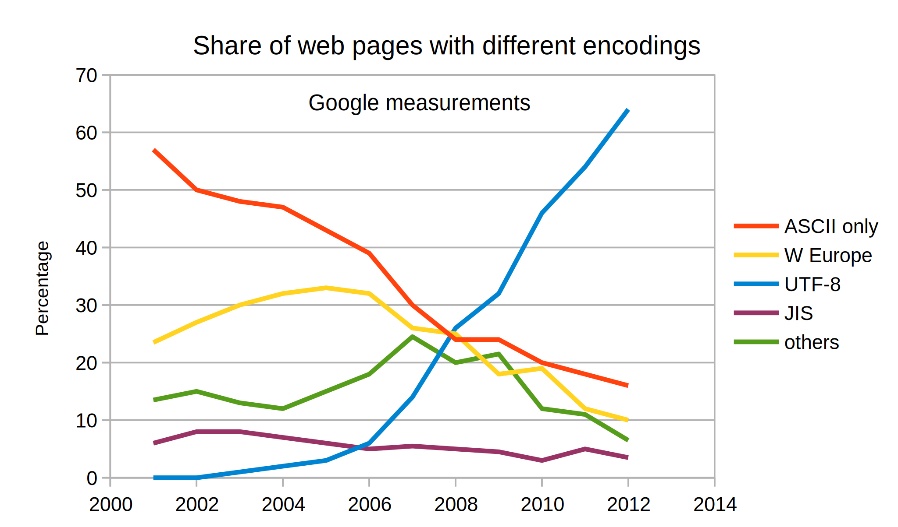
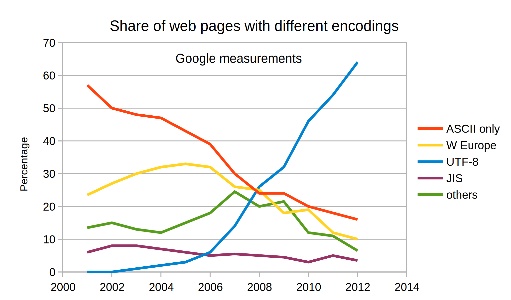
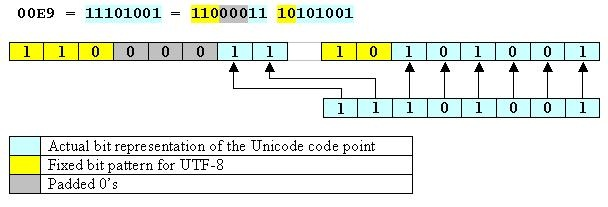
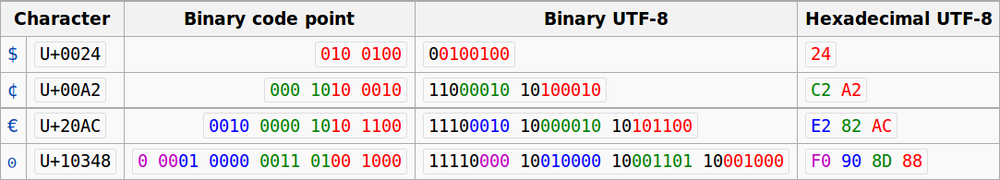

- Necessaria convenzione per codifica numerica (binaria) dei caratteri
- Codifica ASCII (American Standard Code for Information Interchange) a 7 bit
- Caratteri alfanumerici: lettere maiuscole, minuscole, numeri, spazio
- Simboli e punteggiatura: @, #, …
- Caratteri di controllo (non tutti visualizzabili):
TAB, LF, CR, BELLecc.

Introduzione all'informatica
Michele Tomaiuolo
Ingegneria dell'Informazione, UniPR
Caratteri e testo
Caratteri e testo
Tabella ASCII di base

Interruzione di riga
- Unix:
LF- Multics, Unix etc., Mac OS X, BeOS, Amiga, RISC OS
- Windows:
CR+LF- Most early OSes, DOS, OS/2, Windows, Symbian
- Vecchi Apple:
CR- Commodore machines, Apple II family, Mac OS up to version 9
Tabella ASCII estesa

- Caratteri accentati + caratteri per grafici
- Code Page 437 per PC (DOS) in Nord America
- Possibile mischiare testo in inglese e francese (anche se in Francia CP850); ma non assieme greco (CP737), russo ecc.
- ISO 8859, estensioni standard per ASCII ad 8 bit
- ISO 8859-1 (o Latin1): Lingue dell’Europa Occidentale
- ISO 8859-2: Lingue dell’Europa Orientale
- ISO 8859-5: Alfabeto cirillico
- ISO 8859-15: Latin1 con simbolo euro (€)
Unicode


- Unicode associa un preciso code-point (32 bit) a ciascun simbolo
- Possibile rappresentare miliardi di simboli
- Primi 256 code-point = Latin1
- Attualmente >30 sistemi di scrittura
- Rappresentazione di geroglifici e caratteri cuneiformi
- Proposta per Klingon (da Star Trek… rifiutata!)
Unicode Transformation Format
 

- Codifica di un code-point in una sequenza di bit (uno o più code-unit)
- UTF-32 – code-unit di 32-bit, lunghezza fissa
- UTF-16 – code-unit di 16-bit, lunghezza variabile
- UTF-8 – code-unit di 8-bit, ma lunghezza variabile (1-4 byte), max compatibilità con ASCII

UTF-8
- Se bit più alto a 0:
- Simbolo ASCII su 7 bit
- Altrimenti:
- Numero 1 in byte iniziale = numero di byte per code-point
- Byte seguenti cominciano tutti con
10

Immagini
Immagini raster

- Digitalizzazione: da immagine a sequenza binaria
- Immagine raster suddivisa in una griglia di punti (pixel)
- Ogni pixel descritto da un codice, che ne individua il colore
- Profondità: # bit per rappresentare il colore di un pixel
- 1, 2, 8, 12, 16, 24, 32… bit per pixel (bpp)
- Es. 8 bit per 256 (28) possibili colori
- Colore diretto o indicizzato da una palette
- Risoluzione: # punti per pollice (dpi), come in tipografia
- Spesso (ma non sempre), risoluzione orizzontale uguale a verticale
Modelli di colore
- Occhio sensibile a variaz. luminosità
- 6 mln di coni, 125 di bastoncelli
- RGB: rosso, verde, blu
- 8 bit: 3 bit × R e G, 2 × B
- 24 bit: 8 bit × R, G e B
- 32 bit: canale alpha x opacità
- YUV: luminosità, crominanza di R e B
- Sistema PAL, MPEG
- TV a colori (compat. B&W)
- HSB: tonalità, saturazione e luminosità
Formati di file grafici
- BMP: immagine (normalmente) non compressa
- TIFF, PNG: comprimono l’immagine, per ridurne l’occupazione, senza deteriorarla (compressione lossless)
- JPEG: comprime (molto di più), ma deteriora l’immagine (compressione lossy)
Formato BMP

FILE INFO HEADER (14)
2 Tipo file (= “BM”)
4 Dim. file (in byte)
4 Riservato
4 Offset immagine (in byte)
BITMAP INFO HEADER (40)
4 Dimensione struttura
4+4 Larghezza e altezza immagine
2 Piani (non usato)
2 # bit per pixel
4+4 Compressione e dim. img (0 senza compressione)
4+4 Risoluzione orizz. e vert. (pixel per metro)
4+4 # colori in palette e # colori importanti
Palette (RGBQUAD)
4 Blue, Green, Red, Riservato
Es. Redbrick.BMP

Es. Redbrick.BMP

Grafica vettoriale

- Immagine: insieme di primitive geometriche
- Linee, poligoni..., colori, sfumature...
- ▲ Qualità, a varie risoluzioni
- ▲ Compressione dati
- ▲ Gestione modifiche
- ▼ Non intuitiva per alcuni
- ▼ Possibilmente onerosa
- ▼ Risorse non note a priori
Grafica vettoriale
- Applicazioni: editoria (DTP), video-editing, architettura, ingegneria, grafica 3D (CAD), font vettoriali (caratteri scalabili in dimensione senza perdere definizione)
- Formati esistenti: PS (PostScript), PDF (Portable Document Format), WMF (Windows MetaFile), DXF (AutoCAD), CDR (CorelDraw), SWF (Flash), SVG (Scalable Vector Graphics, per il web)
Esempio di file SVG

<!-- possibly inside an HTML5 file -->
<svg width="800" height="600">
<rect x="80" y="60" width="250" height="250"
rx="20" fill="#ff0000"
stroke="#000000" stroke-width="2" />
<rect x="140" y="120" width="250" height="250"
rx="40" fill="#0000ff"
stroke="#000000" stroke-width="2"
fill-opacity="0.7" />
</svg>
Audio digitale
Audio digitale


- Grandezza analogica → discretizzazione
- Campionamento (sampling) nel tempo
- Quantizzazione (quantizing) nelle ampiezze
- Qualità CD: 44 kHz, 16bit
- Spettro udibile: 20-20k Hz, Nyquist-Shannon
Formato WAV

Esempio di file WAV

Documenti strutturati
Documenti strutturati
- Struttura logica
- Determina il ruolo della varie parti del testo
- Titoli, testo, note, etc.
- Struttura grafica
- Assegna una resa grafica ai ruoli
- Quindi determina la resa grafica del documento nel suo complesso
- “Stampa” in modo diverso ciò che ha ruolo diverso
- Word processing: non tanto scrivere, ma ingegnerizzare informazione
WYSIWYG
- Focus su grafica, si perde di vista la struttura logica
- Grafica: non con i comandi grafici...
- Ma definendo gli stili delle varie parti di doc, come ruoli logici
- Es. stili di Word/Writer: “Titolo”, “Nota in Calce”, “Intestazione”
- Non nomi grafici, ma logici
- In alternativa: editing basato su comandi o su tag
HyperText Markup Language
- Documenti strutturati, standard W3C: http://www.w3.org/html/
- HTML dichiara tipi di elementi
- Paragrafi, titoli, liste, collegamenti ipertestuali, elementi multimediali ecc.
- Tipo di elemento descritto da tre parti
- Tag di apertura, contenuto, tag di chiusura
Bla bla, <b>in grassetto.</b>, normale.
- Molti tag permettono la definizione di attributi
<a href="http://www.unipr.it/">UniPR</a>ideclass: attributi generici per assegnare ruoli logici
- Tag semplici non hanno un contenuto
<img src="blueribbon.gif" />
Anatomia di una pagina

Tag di formattazione testo
<p>Questo è un paragrafo.<br />A-capo ma stesso paragrafo.</p>
<p>Testo <strong>in grassetto</strong>, e poi
<em>in corsivo</em>.</p>
<h1>Il titolo più grande</h1>
...
<h6>Il titolo più piccolo</h6>
<div class="remark">
Struttura generica di livello blocco,
con un <span>elemento generico</span> inline.
</div>
Uniform Resource Locator
- Una URL è un riferimento per una risorsa

- Il nome della risorsa dipende interamente dal protocollo. Per HTTP include:
- Nome dell’host su cui risiede la risorsa
- Numero di porta cui collegarsi (default = 80)
- Percorso della risorsa sulla macchina
- Stringa di query (dopo
?) - Frammento: id di un elemento all’interno della risorsa (dopo
#) - http://www.ietf.org:80/rfc/rfc2732.txt
Html 5
- Nuovi elementi di struttura di Html 5
header, main, nav, aside, footerarticle, section, details, summaryfigure, figcaption
- Altri nuovi elementi
video, audio, canvas, embedmark, menu, command, output, timeprogress, meter, datalist
- http://dev.w3.org/html5/html4-differences/
<Domande?>
Michele Tomaiuolo
Palazzina 1, int. 5708
Ingegneria dell'Informazione, UniPR
www.ce.unipr.it/people/tomamic